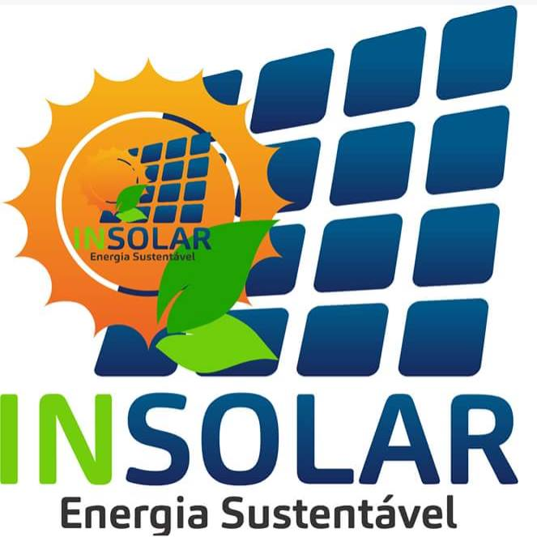

Sabemos que energias renováveis ou sustentáveis são diversas tecnologias que possuem um ciclo de renovação em escala de tempo humana, ou seja, estão sempre disponíveis para a utilização e não se esgotam, o que é bastante importante para o nosso ecossistema, graças a elas, existem diversos lugares que são sustentáveis com bastante eficiência, confira algumas ongs que apoiam e implantam esse tipo de tecnologia:
A Insolar é um negócio social que promove a democratização do acesso à energia solar no Brasil com a instalação br de painéis solares em comunidades de baixa renda, mas com potencial humano e energético. Criada no final de 2013, quando Henrique Drumond e Michel Baitelli participaram da Maratona de Negócios Sociais da SEBRAE. E a partir daí, em conjunto com o apoio de moradores de favelas cariocas, patrocinios, ONGS, entusiastas da energia solar e outras startups, a Insolar já instalou mais de 200 painéis solares e espera instalar mais nos próximos anos. A Insolar é um negócio social onde todo o lucro é revertido para sua missão.
Desde quando foi criada em novembro de 2001 a Sociedade do Sol, uma instituição sem fins lucrativos, se dedica ao desenvolvimento de tecnologias sociais nas áreas de energia solar e renovável e programas de educação ambientais. Sua atuação é dedicada ao desenvolvimento de soluções de baixo impacto ambiental e custos reduzidos para a geração de energia junto às comunidades e organizações
É uma organização sem fins lucrativos que promove a conservação do meio ambiente, o desenvolvimento sustentável e a formação de uma cidadania, baseada em princípios democráticos e justiça social. Atua tanto na denúncia contra irregularidades ambientais quanto sobre incentivo para o uso de energias renováveis na Bahia. A ONG desenvolve projetos como Programa Conservação de Ecossistemas, o Programa Acompanhamento de Políticas Públicas, e o Programa Formação da Cidadania.
É uma organização civil sem fins lucrativos que trabalha em defesa da vida e busca mudar a atual trajetória de degradação socioambiental. A ONG desenvolve trabalhos que abordam temas como mudanças climáticas, energia, desenvolvimento sustentável agricultura e água. Um dos trabalhos desenvolvidos pela organização é o projeto Vila Limeira 100% Solar, que levou energia solar até uma comunidade no Amazonas.